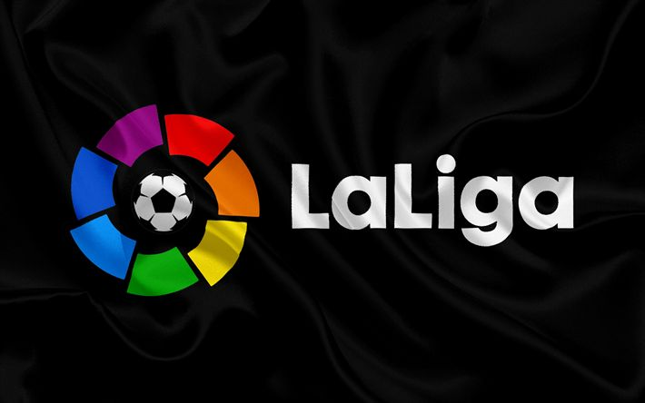

España
La Primera División de España o LaLiga, cuyo nombre comercial es LaLiga EA Sports debido al patrocinio de EA Sports, y cuyo nombre oficial es Campeonato Nacional de Liga de Primera División, es la máxima categoría del sistema de ligas de fútbol de España y la principal competición a nivel de clubes del país. El vigente campeón es el Fútbol Club Barcelona. La organización desde 1984 la Liga Nacional de Fútbol Profesional tras suceder a la Real Federación Española de Fútbol (RFEF). Se disputa desde la temporada 1928-29 y tan solo se vio interrumpida en dos ocasiones: entre 1936 y 1938, debido a la guerra civil española, y en 2020, debido a una pandemia de COVID-19 iniciada a finales del 2019 y que adquirió notoriedad. a principios del año siguiente.
